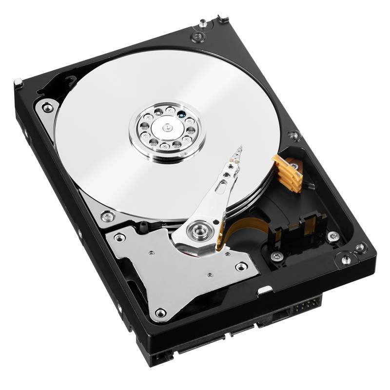
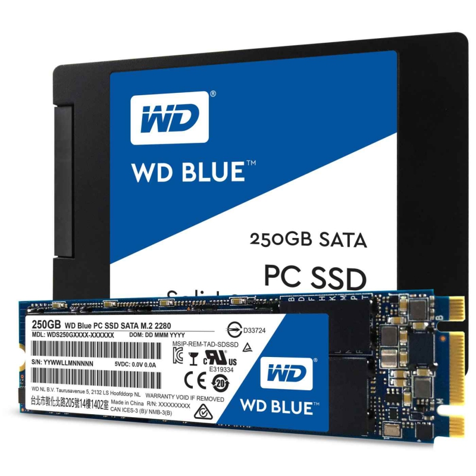

HDD
-
Výhody
- Větší kapacita
- Cenově dostupnější
- Odolné vůči určitému stupni náslí
-
Nevýhody
- Paradoxně křehčí
- Pomaleší
- Hluk
- Větší spotřeba energie
SSD
-
Výhody
- Rychlost
- Hluk
- Odolnější než HDD - Nic se tam netočí
- Menší spotřeba energiie
-
Nevýhody
- Menší životnost
- Omezená kapacita
- Cena
Celkově volba mezi HDD a SSD závisí na vašich konkrétních potřebách a preferencích.